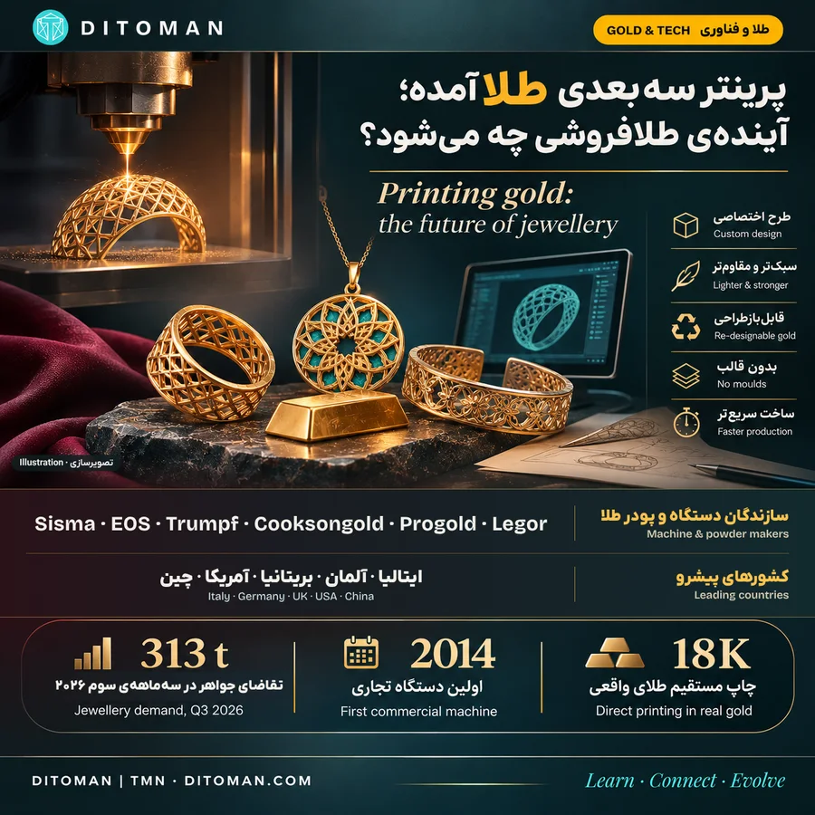
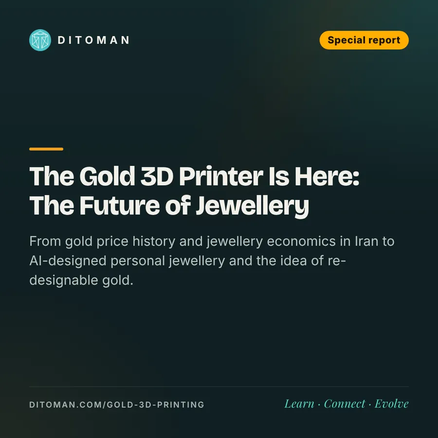

پرینتر سهبعدی طلا آمده؛ آینده طلافروشی چه میشود؟
The gold 3D printer is here: what happens to the jewellery trade?
از تاریخچه قیمت طلا و اقتصاد جواهر در ایران تا جواهر شخصی با هوش مصنوعی و ایده «طلای قابلبازطراحی».
From gold price history and jewellery economics in Iran to AI-designed personal jewellery and the idea of re-designable gold.
در یک نگاه
دستگاههایی که مستقیماً با طلای واقعی ۱۸ عیار جواهر میسازند، از سال ۲۰۱۴ وجود دارند. اما در سالهای اخیر، سه چیز با هم رسیدهاند: طلای گران، هوش مصنوعی برای طراحی و چاپ سهبعدی دقیقتر. نتیجه میتواند تغییر یکی از قدیمیترین صنعتهای دنیا باشد؛ صنعتی که در ایران هم زینت است و هم پسانداز.
| شاخص | عدد |
|---|---|
| اولین دستگاه تجاری چاپ مستقیم طلای ۱۸ عیار | Precious M 080، سال ۲۰۱۴ |
| اوج تاریخی قیمت طلا | حدود ۵٬۵۹۰ دلار در هر اونس، ۲۸ ژانویهی ۲۰۲۶ |
| قیمت طلا، ۱۶ نوامبر ۲۰۲۶ | حدود ۳٬۸۷۵ دلار؛ حدود ۳۱٪ زیر اوج |
| تقاضای جهانی جواهر، سه ماه سوم ۲۰۲۶ | ۳۱۳ تن (۱۷٪ کمتر)؛ ارزش ۴۳ میلیارد دلار (۲٪ بیشتر) |
| خرید بانکهای مرکزی، سه ماه سوم ۲۰۲۶ | ۳۲۱ تن (۴۲٪ بیشتر) |
| تقاضای جواهر ایران، بهار ۲۰۲۵ | ۱۲٪ رشد، برخلاف روند جهانی |
این گزارش آموزشی است و توصیه به خرید یا فروش طلا نیست.
1. طلا، از ۳۵ دلار تا ۵ هزار دلار
طلا هزاران سال پول، زینت و پسانداز بوده است. در دوران جدید، چند نقطهی عطف دارد:
| زمان | قیمت تقریبی هر اونس | داستان |
|---|---|---|
| ۱۹۷۱ | ۳۵ دلار | پایان قیمت ثابت طلا و دلار |
| ژانویهی ۱۹۸۰ | ۸۵۰ دلار | تورم بالا و بحرانهای جهانی |
| سپتامبر ۲۰۱۱ | ۱٬۹۲۱ دلار | بحران بدهی اروپا |
| اوت ۲۰۲۰ | حدود ۲٬۰۷۵ دلار | کرونا و بستههای حمایتی |
| اکتبر ۲۰۲۵ | بیش از ۴٬۰۰۰ دلار | خرید بانکهای مرکزی |
| ژانویهی ۲۰۲۶ | حدود ۵٬۵۹۰ دلار | اوج تاریخی |
| نوامبر ۲۰۲۶ | حدود ۳٬۸۷۵ دلار | اصلاح بعد از اوج، با سختگیری فدرال رزرو |
درس تاریخ: طلا در بلندمدت ارزشش را حفظ کرده، اما مسیرش هموار نبوده؛ افتهای ۳۰ درصدی بعد از اوجها، بارها تکرار شده است.
2. صنعت جواهر: طلای کمتر، پول بیشتر
جواهر هنوز یکی از بزرگترین بخشهای تقاضای طلاست. اما با گران شدن طلا، الگوی خرید عوض شده است.
- حجم کمتر: در سه ماه سوم ۲۰۲۶، تقاضای جهانی جواهر به ۳۱۳ تن رسید؛ ۱۷٪ کمتر از پارسال
- ارزش بیشتر: همین حجم کمتر، ۴۳ میلیارد دلار ارزش داشت؛ ۲٪ بیشتر
- بازیگران بزرگ: بانکهای مرکزی در همین فصل ۳۲۱ تن خریدند و صندوقهای طلا ۲۱۱ تن جذب کردند
- نتیجه: وقتی هر گرم گرانتر است، طراحی سبکتر، توخالی و هوشمندتر ارزش اقتصادی پیدا میکند؛ دقیقاً همان کاری که چاپ سهبعدی خوب انجام میدهد
3. جواهر امروز چطور ساخته میشود؟
روش سنتی و رایج، ریختهگری با موم گمشده است:
- طراحی: با دست یا نرمافزار
- مدل: ساخت مدل مومی، امروز اغلب با چاپگر سهبعدی رزینی
- قالب: مدل در گچ مخصوص قرار میگیرد و موم ذوب میشود
- ریختهگری: طلای مذاب جای خالی را پر میکند
- پرداخت: تمیزکاری، نصب سنگ، صیقل و آزمایش عیار
یعنی چاپ سهبعدی همین حالا هم وارد صنعت جواهر شده، اما بیشتر برای ساخت قالب، نه ساخت مستقیم طلا.
4. سه راه چاپ سهبعدی طلا
| روش | چطور کار میکند | امروز کجاست |
|---|---|---|
| چاپ مستقیم طلا | پودر آلیاژ طلا با لیزر لایهلایه ذوب میشود | صنعتی و گران؛ برای قطعات خاص |
| چاپ قالب و ریختهگری | مدل رزینی یا مومی چاپ و طلا ریخته میشود | رایجترین و اقتصادیترین |
| چاپ فلز دیگر و آبکاری | برنج یا فولاد چاپ و روکش طلا میشود | ارزان؛ اما جواهر ۱۸ عیار نیست |
اولین پرینتر طلا: دستگاه Precious M 080، ساخت مشترک EOS آلمان و Cooksongold بریتانیا، در نمایشگاه جواهر و سنگهای قیمتی هنگکنگ ۲۰۱۴ معرفی شد؛ با لیزر ۱۰۰ واتی، فضای ساخت حدود ۸۰ در ۱۰۰ میلیمتر و آلیاژ ویژهی ۱۸ عیار (۷۵٫۱٪ طلا). سازندگان گفتند در این روش «پیچیدگی رایگان است»؛ یعنی طرح پیچیده گرانتر از طرح ساده تمام نمیشود.
هزینه: دستگاههای صنعتی چاپ مستقیم فلز گرانبها، بسته به مدل و تجهیزات، صدها هزار دلار قیمت دارند؛ بهاضافهی پودر طلا، تجهیزات بازیابی پودر، تهویه، آموزش و نگهداری.
4.1. پودر طلا چطور ساخته میشود؟
پرینتر طلا با نخ یا ورق طلا کار نمیکند؛ با پودر کار میکند. این پودر با روشی به نام اتمیزه کردن گازی ساخته میشود:
- ذوب: آلیاژ طلا، مثلاً ۷۵٪ طلا بهاضافهی نقره و مس برای ۱۸ عیار، در کورهی القایی و گاهی در محیط گاز محافظ ذوب میشود
- ریزش: یک دریچه باز میشود و جریان باریکی از طلای مذاب پایین میریزد
- شکستن با گاز: جتهای گاز آرگون یا نیتروژن با سرعت بسیار بالا، گاهی فراصوت، به جریان میخورند و آن را به قطرههای بسیار ریز میشکنند
- کره شدن: قطرهها هنگام سقوط سرد میشوند و به کرههای صاف و بیمنفذ تبدیل میشوند؛ شکل کروی باعث میشود پودر مثل مایع روان باشد و لایهها یکنواخت پهن شوند
- الک و دستهبندی: پودر الک میشود تا فقط ذرههای هماندازه برای چاپ بمانند
روش ارزانتر، اتمیزه کردن با آب است؛ اما ذرههای آن نامنظم و متخلخلاند و برای چاپ دقیق مناسب نیستند.
مقایسه با روش سنتی: ورق و مفتول طلا در طلاسازی سنتی با نورد (پرس بین غلتکها) و کشیدن از حدیدههای پیدرپی ساخته میشوند؛ پرینتر بهجای اینها، مستقیم از پودر شکل میسازد.
4.2. داخل دستگاه چه میگذرد؟
- محفظهی کوچک: در دستگاهی مثل Sisma MySint 100، سیلندر ساخت را میشود از ۱۰۰ میلیمتر تا ۳۴ میلیمتر کوچک کرد؛ چون هر گرم پودر طلا گران است و نباید پودر اضافه در دستگاه بماند
- گاز محافظ: محفظه با آرگون یا نیتروژن پر میشود تا فلز داغ با اکسیژن واکنش ندهد
- لایهلایه: یک تیغه، لایهای از پودر به ضخامت ۱۰ تا ۵۰ میکرون پهن میکند؛ لیزر (تا ۲۰۰ وات در این دستگاه) فقط جای طرح را ذوب میکند؛ صفحه پایین میرود و لایهی بعدی پهن میشود؛ هزاران بار
- لیزر سبز: طلا و مس نور مادون قرمز را بازتاب میدهند؛ شرکت Trumpf برای همین لیزر سبز را معرفی کرد که این فلزات بهتر جذبش میکنند
- بازیافت پودر: پودر ذوبنشده جمع، الک و دوباره استفاده میشود
4.3. دستگاهها، سازندگان و قیمتها
چاپ مستقیم طلا (صنعتی):
| دستگاه | سازنده و کشور | توضیح |
|---|---|---|
| MySint 100 | Sisma، ایتالیا | لیزر تا ۲۰۰ وات، لایه ۱۰ تا ۵۰ میکرون، ویژهی فلزات گرانبها |
| Precious M 080 | EOS (آلمان) و Cooksongold (بریتانیا) | اولین دستگاه ویژهی طلای ۱۸ عیار، ۲۰۱۴ |
| TruPrint 1000 با لیزر سبز | Trumpf، آلمان | لیزر سبز برای طلا و مس |
| EOS M 100 | EOS، آلمان | دستگاه کوچک فلزی صنعتی |
قیمت این دستگاهها بهصورت عمومی اعلام نمیشود و باید از سازنده استعلام گرفت؛ منابع تخصصی، قیمت دستگاههای چاپ مستقیم طلا را از حدود ۳۰۰ هزار دلار به بالا گزارش میکنند.
پودر طلای چاپ سهبعدی:
| شرکت | کشور | لینک |
|---|---|---|
| Progold | ایتالیا | progold.com |
| Legor | ایتالیا | legor.com |
| Cooksongold | بریتانیا | cooksongold.com |
چاپگرهای قالب جواهر (رزینی و مومی)، قیمت تقریبی به دلار:
| دستگاه | نوع | قیمت تقریبی |
|---|---|---|
| Elegoo Saturn 4 Ultra | رزینی رومیزی | حدود ۴۰۰ دلار |
| Anycubic Photon Mono M7 Pro | رزینی رومیزی | حدود ۴۸۰ دلار |
| Phrozen Sonic Mighty Revo 14K | رزینی رومیزی | حدود ۸۵۰ دلار |
| Formlabs Form 4 | رزینی حرفهای | حدود ۳٬۵۰۰ دلار |
| Asiga Ultra 50 | رزینی DLP | حدود ۱۵ هزار دلار |
| Flashforge WaxJet 400 | چاپ مستقیم موم | حدود ۵۲ هزار دلار |
راهنمای Formlabs برای چاپ سهبعدی جواهر · مقایسهی چاپگرهای جواهر در All3DP
سفارش آنلاین: در یک آزمایش All3DP، یک انگشتر سادهی ۱۴ عیار در سرویسهای خارجی بین حدود ۹۰۰ تا ۱٬۶۰۰ دلار قیمت داشت (بیشتر با چاپ قالب و ریختهگری). گزارش All3DP
در ایران: چند فروشندهی داخلی چاپگر رزینی و رزین ریختهگری جواهر عرضه میکنند؛ برای نمونه ماداتکنولوژی، برنا سهبعدی، هگزاگون، آذرین و رزین ریختهگری در دیجیکالا.
این لینکها فقط برای آشناییاند. دیتومان هیچ سازنده یا فروشندهای را تأیید یا تبلیغ نمیکند و قیمتها تقریبی و قابل تغییرند.
4.4. کشورهای پیشرو
- ایتالیا: قطب جواهرسازی اروپا در ویچنزا و آرتزو؛ سازندهی دستگاه Sisma و پودرهای Progold و Legor
- آلمان: EOS و Trumpf، از پیشگامان چاپ فلز و لیزر سبز
- بریتانیا: Cooksongold در بیرمنگام، شریک ساخت اولین پرینتر طلا
- آمریکا: Formlabs و 3D Systems در چاپگرهای قالب جواهر
- چین و تایوان: چاپگرهای رزینی ارزانقیمت مثل Elegoo، Anycubic، Creality و Phrozen که چاپ قالب را برای کارگاههای کوچک در دسترس کردهاند
5. اقتصاد جواهر در ایران
در ایران قیمت جواهر معمولاً از این اجزا ساخته میشود:
- ارزش طلا: وزن × نرخ روز طلای ۱۸ عیار
- اجرت ساخت: بسته به طرح، از چند درصد تا بیش از ۲۰ درصد
- سود فروشنده: معمولاً حدود ۷٪
- مالیات بر ارزش افزوده: روی اجرت و سود
مشکل اصلی: هنگام فروش، معمولاً فقط ارزش طلا برمیگردد و اجرت، سود و مالیات از دست میرود. برای همین، خانوادههای ایرانی برای سرمایهگذاری، سکه و طلای کماجرت را ترجیح میدهند و برای زینت، جواهر پرکار.
یک مثال فرضی: یک انگشتر ۵ گرمی ۱۸ عیار، با قیمت جهانی امروز، حدود ۴۷۰ دلار طلا دارد. اگر اجرت ۲۰٪ باشد، حدود ۹۰ تا ۱۰۰ دلار فقط بابت ساخت پرداخت میشود که هنگام فروش برنمیگردد. (این محاسبه تقریبی و با نرخ جهانی است و قیمت بازار ایران، به نرخ ارز داخلی بستگی دارد.)
ایران خلاف جریان: طبق شورای جهانی طلا، در بهار ۲۰۲۵ و در دوران تنشهای منطقهای، تقاضای جواهر در ایران ۱۲٪ رشد کرد؛ چون مردم جواهر را بهعنوان جایگزین سرمایهگذاری میخریدند.
6. پرینتر طلا چه چیزی را عوض میکند؟
- اجرت طرحهای پیچیده: وقتی دستگاه طرح ساده و پیچیده را تقریباً با یک هزینه بسازد، فاصلهی «جواهر زینتی» و «طلای سرمایهای» کمتر میشود
- جواهر کاملاً شخصی: مشتری با هوش مصنوعی و کمک یک طراح، طرح اختصاصی خودش را میسازد؛ انگشتر با نام و تاریخ، نقش کاشی یا قالی خانوادگی، خط نستعلیق یا حتی اسکن یک یادگاری قدیمی
- طلای قابلبازطراحی: ایدهای برای آینده: کسی که مقداری طلا دارد، هر چند سال آن را ذوب و با طرح تازه چاپ کند. طلا بهعنوان سرمایه میماند و فقط شکلش عوض میشود؛ طراحی، یک خدمت جداگانه با قیمت مشخص میشود
- اشتراک طراحی برای مشتریان خاص: طلافروشیهای لوکس میتوانند بهجای فروش قطعهی آماده، «اشتراک طراحی» بفروشند؛ مشتری طلایش را نگه میدارد و هر فصل، طرح تازهای میگیرد
- سبکتر و بزرگنماتر: ساختارهای توخالی و توری یعنی جواهری چشمگیر با طلای کمتر
- بدون انبار: ویترین دیجیتال بهجای انبار پر از طلا؛ فروشنده فقط سفارش واقعی را میسازد و سرمایهاش کمتر در انبار میخوابد
- بازیافت سادهتر: طلای کهنه، ذوب و دوباره به پودر یا شمش تبدیل میشود؛ زنجیرهای که میتواند کوتاهتر و شفافتر شود
ایدههای «طلای قابلبازطراحی» و «اشتراک طراحی» پیشنهادهای دیتومان برای آیندهاند، نه مدلهایی که امروز رایج باشند.
7. چه شغلهایی تغییر میکنند؟
| نقش | امروز | فردا |
|---|---|---|
| طراح جواهر | طراحی برای تولید انبوه | طراحی شخصی برای هر مشتری، با هوش مصنوعی |
| مدلساز و قالبساز | ساخت مدل مومی و قالب | مدلسازی دیجیتال و آمادهسازی فایل چاپ |
| ریختهگر | ریختهگری انبوه | همچنان لازم برای تولید انبوه؛ کمتر برای قطعات خاص |
| پرداختکار و استادکار | ضروری | همچنان ضروری؛ هیچ قطعهای بدون پرداخت کامل نیست |
| طلافروش | فروش از ویترین | مشاور و طراح، با کاتالوگ دیجیتال |
| مرکز خدمات چاپ | تقریباً وجود ندارد | چاپ برای دهها کارگاه و فروشگاه |
8. فرصت برای ایران
- مراکز خدمات چاپ: لازم نیست هر کارگاه دستگاه چندصد هزار دلاری بخرد؛ چند مرکز در شهرهای بزرگ میتوانند برای صدها طلافروشی چاپ کنند
- طراحی ایرانی: نقشهای سنتی ایرانی، از اسلیمی تا کاشیکاری، با چاپ سهبعدی به جزئیاتی میرسند که با ریختهگری سخت است؛ و میتوانند صادر شوند
- آموزش: طراحی دیجیتال جواهر، مهارتی است که با یک رایانه شروع میشود؛ فرصتی برای جوانان خلاق
- شفافیت: فایل دیجیتال، وزن و طرح هر قطعه را دقیق ثبت میکند؛ پایهای برای اعتماد بیشتر بین خریدار و فروشنده
9. چالشها و واقعبینی
- هزینهی دستگاه: صدها هزار دلار، بهاضافهی تجهیزات جانبی
- سرعت: برای تولید انبوه، ریختهگری هنوز سریعتر و ارزانتر است
- پودر طلا: گرانتر از شمش و نیازمند بازیابی دقیق
- کیفیت سطح: قطعهی چاپی پرداخت جدی میخواهد
- عیار و استاندارد: هر قطعه، مثل هر جواهر دیگر، باید آزمایش و انگ شود
- دسترسی: خرید دستگاه، پودر و قطعات یدکی برای ایران محدودیتهای جدی دارد
10. پنج سال آینده
- ارزانتر شدن دستگاهها: همان روندی که در چاپگرهای رزینی دیدیم
- هوش مصنوعی طراح: از توضیح متنی یا یک عکس، به فایل آمادهی چاپ
- فروشگاههای ترکیبی: ویترین کوچک، کاتالوگ بزرگ دیجیتال، و تولید بر اساس سفارش
- رقابت بر سر طراحی: وقتی ساخت سادهتر شود، ارزش اصلی در طرح، برند و اعتماد خواهد بود
11. نگاه دیتومان
پرینتر طلا شاید قیمت خود طلا را تغییر ندهد؛ اما میتواند قیمت شکل دادن به طلا را تغییر دهد.
آیندهی طلافروشی شاید ویترینی پر از طلا نباشد؛ یک طراح، یک فایل و یک دستگاه باشد.
در کشوری که طلا هم زینت است و هم پسانداز، این یعنی جواهری که به خود ما شبیهتر است، کمتر از ارزشش را هنگام فروش از دست میدهد، و هنر ایرانی را با فناوری روز به ویترین دنیا میبرد.
بیشتر بخوانید
منابع
- 3DPrint.com: Precious M 080, 3D printing jewellery in 18K gold (2014)
- Dezeen: 3D-printed 18-carat gold collection aims to transform the jewellery industry
- Kitco: WGC Q3 2026, gold demand near record, central bank buying +42%
- World Gold Council: Gold Demand Trends Q3 2026, jewellery
- MetalCharts: gold all-time high and peaks since 1980
- Malay Mail: Iran gold demand surges during conflict (WGC, Q2 2025)
- VoxelMatters: jewellery 3D printing revenues
آخرین بازبینی: ۲۲ آبان ۱۴۰۵. این گزارش آموزشی است و توصیه به خرید یا فروش طلا نیست.